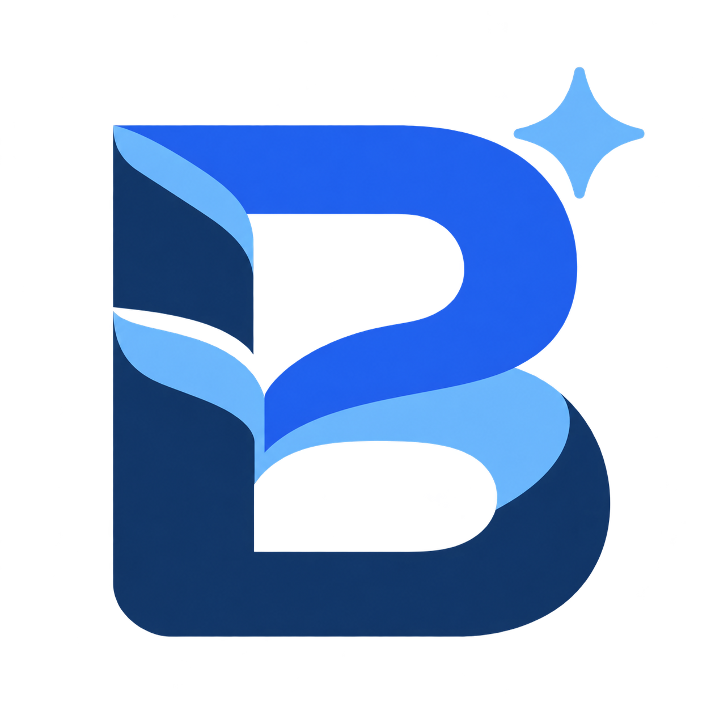
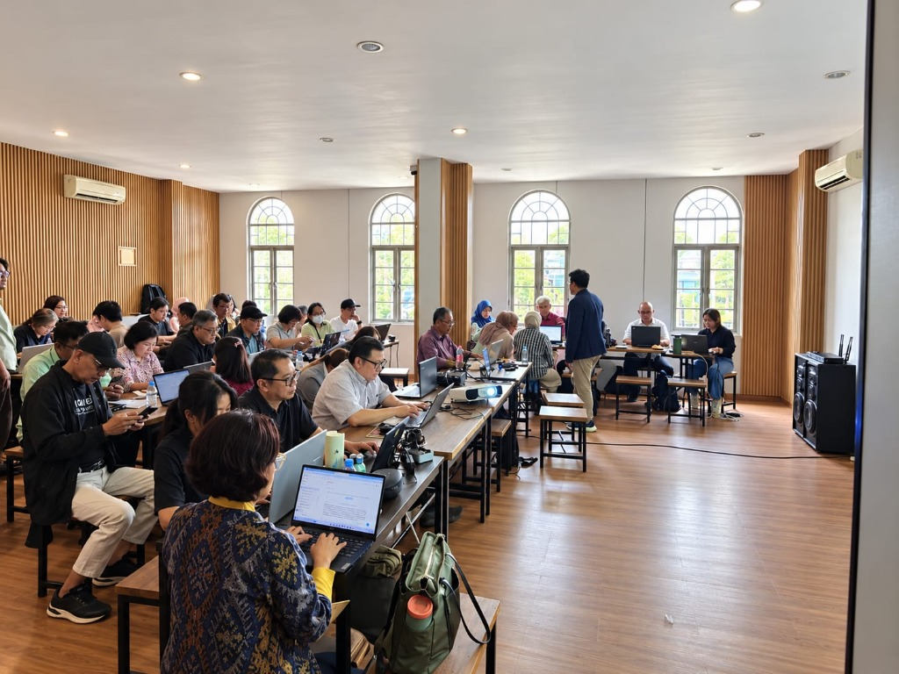
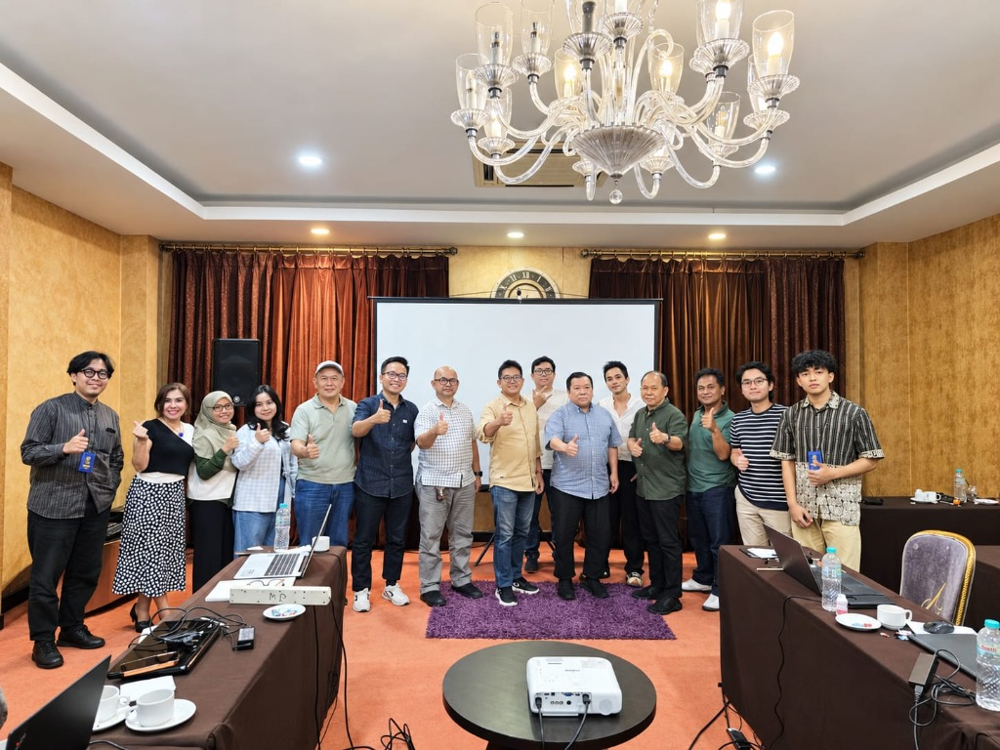

Website & landing page
Buat halaman bisnis dengan bantuan AI, tanpa menulis kode dari nol.
KEUNGGULANNYAIde lebih cepat menjadi halaman yang bisa dikembangkan.UNTUK ANDAPunya etalase digital untuk mengenalkan bisnis.
✦ Praktik utama
WORKSHOPBisa AI.Mulai belajar ↗Dari belum tahu harus mulai dari mana, jadi punya karya pertama. Belajar AI secara langsung untuk pekerjaan, konten, dan bisnis Anda.

Punya ide bisnis, tapi belum punya website? Butuh konten, tapi waktu selalu habis? Atau ingin memakai AI, tapi bingung memberi instruksi?
Ubah rasa penasaran menjadi langkah nyata. Di kelas ini, Anda belajar sambil mencoba—dengan arahan yang mudah diikuti.
Materi yang dekat dengan kebutuhan Anda.
Pelajari caranya, pahami keunggulannya,
rasakan manfaatnya.
Buat halaman bisnis dengan bantuan AI, tanpa menulis kode dari nol.
Susun slide, headline promosi, dan pesan bisnis dengan instruksi terarah.
Kenali alur pembuatan karakter, visual produk, dan konten affiliate.
Pelajari gambaran alur CS berbantuan AI untuk menjawab pertanyaan pelanggan.
Lihat bagaimana perintah bahasa sehari-hari menjadi prototipe interaktif.
Belajar menyusun instruksi jelas dan mengenali penerapan AI yang bernilai.
Fokus praktik: website dan presentasi. Materi lainnya diperkenalkan melalui demo dan eksplorasi sesuai sesi kelas.

LEARNING BYSuasana tatap muka membuat Anda bisa bertanya, mengikuti proses, dan mengembangkan karya bersama peserta lain.
Kenali tools dan cara memberi instruksi yang tepat.
Ikuti proses pembuatan website dan presentasi.
Bawa pulang fondasi untuk terus bereksperimen.
Intip contoh visual berbantuan AI sebagai inspirasi sebelum memulai perjalanan Anda.
Video contoh YouTube · bukan jaminan hasil pesertaEksplorasi website, promosi, dan layanan pelanggan untuk bisnis Anda.
Kembangkan ide konten dan alur produksi visual yang lebih terarah.
Bantu menyusun presentasi, materi ajar, dan komunikasi kerja.
Mulai dari nol dengan bahasa sederhana dan pendampingan langsung.
Batch November 2026 · Kelas tatap muka
Disarankan membawa laptop untuk praktik.
Jadwal dan harga mengacu pada situs referensi. Konfirmasikan ketersediaan dan detail kelas kepada admin sebelum pembayaran.
Mulai belajar Practical AI dengan arahan langsung dan materi yang dekat dengan keseharian.
*Sertifikat untuk peserta yang mengikuti rangkaian kelas dan dinyatakan lulus. Biaya langganan tools AI, jika diperlukan, dikonfirmasi kepada admin.
✳Kenali kelasnya sebelum menentukan langkah Anda.
Tanya admin langsung ↗Bisa. Kelas dirancang untuk pemula, menggunakan bahasa sederhana, dan dibimbing langkah demi langkah. Anda tidak perlu memiliki pengalaman coding.
Laptop disarankan agar Anda bisa mengikuti praktik dengan lebih nyaman. Smartphone juga bisa digunakan, dengan beberapa keterbatasan saat praktik.
Fokus praktik adalah pembuatan website dan presentasi. AI influencer, chatbot, aplikasi, dan game diperkenalkan melalui demo dan eksplorasi.
Pilih jadwal dan isi formulir, lalu kirim ringkasan ke WhatsApp admin. Konfirmasikan kursi, harga, fasilitas, serta instruksi pembayaran langsung dengan admin sebelum melakukan transfer.
Sertifikat kelulusan diberikan kepada peserta yang telah mengikuti rangkaian kelas dan dinyatakan lulus, sesuai ketentuan penyelenggara.
Tidak ada jaminan penghasilan. Hasil karya bergantung pada latihan, tools yang digunakan, dan pengembangan Anda setelah kelas.
Langkah pertama Anda bersama AI dimulai di sini.